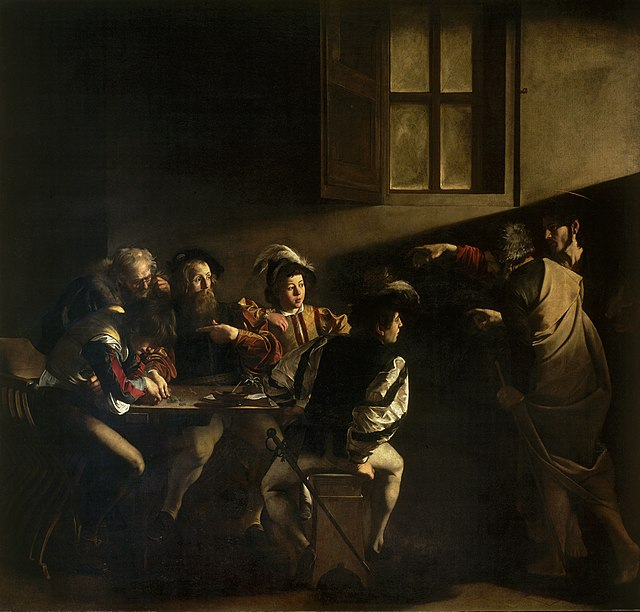
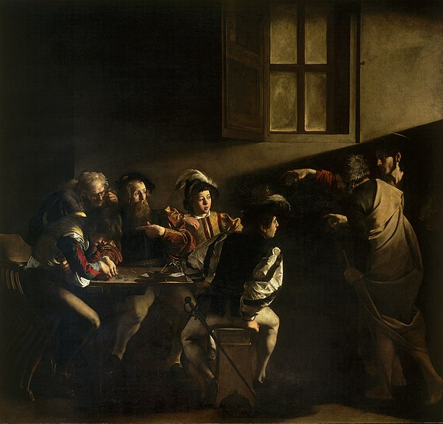

✧ Baroque Art ✧
According to Britannica, Baroque art and architecture, the visual arts and building design and construction produced during the era in the history of Western art that roughly coincides with the 17th century. The earliest manifestations, which occurred in Italy, date from the latter decades of the 16th century, while in some regions, notably Germany and colonial South America, certain culminating achievements of Baroque did not occur until the 18th century.
 


The work that distinguishes the Baroque period is stylistically complex, even contradictory. In general, however, the desire to evoke emotional states by appealing to the senses, often in dramatic ways, underlies its manifestations. Some of the qualities most frequently associated with the Baroque are grandeur, sensuous richness, drama, vitality, movement, tension, emotional exuberance, and a tendency to blur distinctions between the various arts.
continue your journey:
part five
Simple Div Link
Learn more about the art of the Baroque movement here